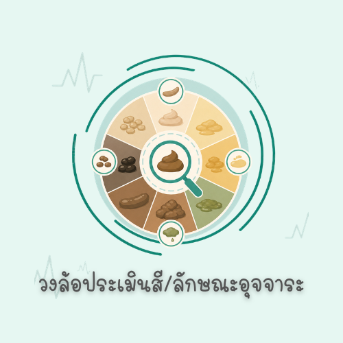
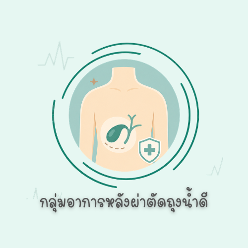

🩺
เลือกหัวข้อที่ต้องการดู
แตะรูปเพื่อเปิดดูรายละเอียด
🔒 สำคัญ
ห้ามส่งต่อ/ห้ามแชร์ให้บุคคลอื่น
ใช้เฉพาะผู้ป่วยที่เข้าร่วมโปรแกรม

วงล้อประเมินสี/ลักษณะอุจจาระ
เปิดเครื่องมือวงล้อแบบหมุนได้
›

กลุ่มอาการหลังผ่าตัดถุงน้ำดี
ดูอาการที่ควรสังเกตหลังผ่าตัด
›
แตะหัวข้อเพื่อเปิดดู
ปิด
หัวข้อ
เต็มจอ